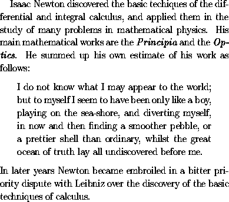

\begin{quote} ... \end{quote}
and
\begin{quotation} ... \end{quotation}.
The quote environment is recommended for short quotations:
the whole quotation is indended in the quote environment,
but the first lines of individual paragraphs are not further indented.
The input file
Isaac Newton discovered the basic techiques of
the differential and integral calculus, and
applied them in the study of many problems
in mathematical physics. His main mathematical
works are the \emph{Principia} and the \emph{Optics}.
He summed up his own estimate of his work as follows:
\begin{quote}
I do not know what I may appear to the world; but to
myself I seem to have been only like a boy, playing
on the sea-shore, and diverting myself, in now and
then finding a smoother pebble, or a prettier shell
than ordinary, whilst the great ocean of truth lay
all undiscovered before me.
\end{quote}
In later years Newton became embroiled in a bitter
priority dispute with Leibniz over the discovery
of the basic techniques of calculus.
is typeset by LaTeX as follows:

For longer quotations one may use the quotation environment: the whole quotation is indented, and the openings of paragraphs are then further indented in the normal fashion.